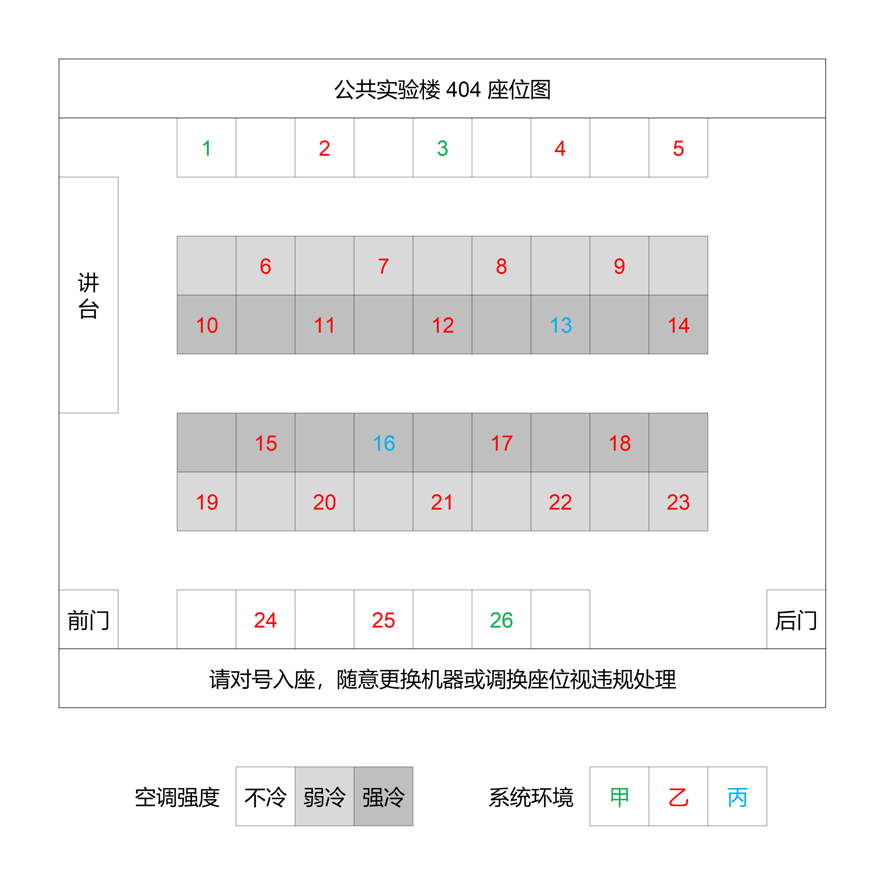
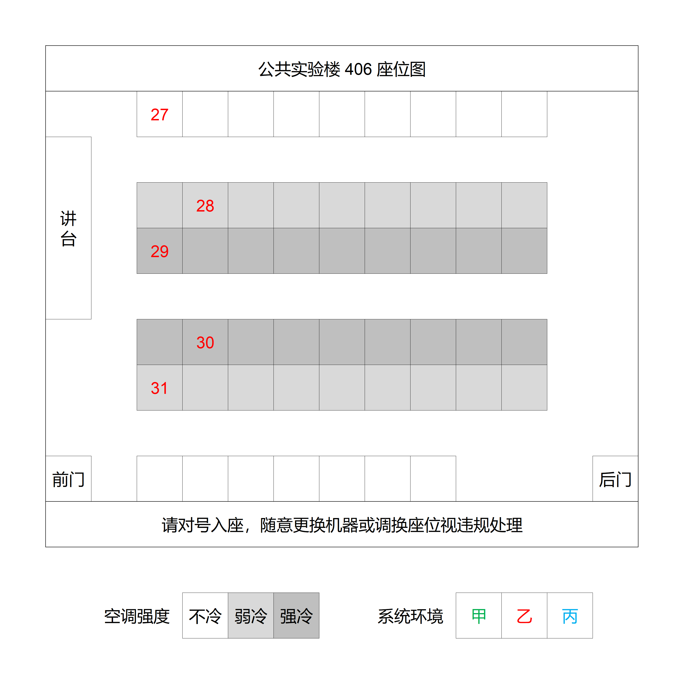

日期：2026 年 03 月 28 日（周六）
Caution
因不可抗力因素，比赛地点由公共实验楼 405/407 改为公共实验楼 404/406。
比赛时长为五小时，但竞赛开始后，竞赛组委会可依据赛场出现的不可预见的事件而调整比赛时间长度。一旦比赛时间长度发生改变，竞赛组委会将会以及时并且统一的方式通知全体参赛选手。
比赛前，参赛选手需对号入座，不得随意更换座位和比赛用机，如需更换请与工作人员请求。
比赛前，参赛选手必须携带学生证、学生卡或身份证中的任意一项参赛，以便核验身份。
比赛前和比赛期间，参赛选手允许对自己的比赛用机进行配置，但不得进行恶意修改。
比赛期间，每位参赛选手仅可使用一台比赛用机，参赛选手可使用参考书、 手册、字典等纸质参考资料，但不允许使用任何电子工具或电子媒质资料。
比赛期间，参赛选手有权提交解释请求，针对题目描述中的不明确或者错误的部分提问。如果题目中确实存在不明确或不正确的部分，竞赛组委会将会以及时并且统一的方式对全体参赛选手进行声明或更正。
比赛期间，参赛选手不得上网搜索、与工作人员以外的人交流、使用即时通讯工具等。赛后竞赛组委会会对代码进行机器与人工查重和人工智能生成内容检测。
比赛期间，如参赛选手需要中途退场，请与工作人员说明。参赛选手中途无故退场后不得重返赛场比赛。
对于赛时或赛后发生违规行为的选手，竞赛组委会有权依情节轻重中止违规选手比赛、取消违规选手成绩、限制违规选手未来参赛以及公告其违规事件。
对于正式参赛选手，拟设置以下奖项3：
| 奖项 | 对象 |
|---|---|
| 金牌 | 排名第一的选手 |
| 银牌 | 排名第二的选手 |
| 铜牌 | 排名第三的选手 |
| 一等奖 | 有效参赛人数中前 |
| 二等奖 | 有效参赛人数中前 |
| 三等奖 | 有效参赛人数中前 |
| 最快解题奖 | 每题最快正确解出的选手 |
比赛用机环境：
操作系统：Windows 10
开发工具：视比赛用机系统而定，本次比赛提供了三种系统，其中包含的开发工具分别如下4：
系统环境甲（对四种语言均有需求，或对 Visual Studio Code 有需求）：
1Dev-C++ 5.11 (gcc 4.9.2, g++ 4.9.2)2Python 3.8.63Python 3.12.24Eclipse IDE for Java Developers 4.16.0 (JavaSE-14)5Visual Studio Code 1.87.2系统环境乙（对 C/C++ 或 Python 有强需求）：
xxxxxxxxxx41Dev-C++ 5.10 (gcc 4.8.1, g++ 4.8.1)2Code::Blocks 20.03 (gcc 8.1.0, g++ 8.1.0)3PyCharm 2021.3.3 (Community Edition)4Python 3.9.7系统环境丙（对 Java 或 Python 有强需求，对 C/C++ 有弱需求）：
xxxxxxxxxx51Code::Blocks 20.03 (gcc 8.1.0, g++ 8.1.0)2PyCharm 2020.1 (Professional Edition)3Python 3.12.24IntelliJ IDEA 2021.3 (OpenJDK 11.0.12)5Eclipse IDE for Java Developers 4.22.0 (JavaSE-17)请各选手在报名表中填写本次比赛中可能会使用的编程语言，工作人员将基于此安排最适合各选手的比赛用机系统。除此之外，在线评测系统还提供了“在线编程模式”供选手使用。
评测系统：Hydro v4.13.3
支持提交的编程语言及编译指令：
| 编程语言 | 编译/解释器 | 指令 |
|---|---|---|
| C | gcc 12.3.0 | /usr/bin/gcc -Wall --std=c99 -o foo foo.c -lm |
| C++ (O2) | g++ 12.3.0 | /usr/bin/g++ -Wall -std=c++17 -o foo foo.cc -lm -O2 -I/include |
| Java | OpenJDK 12.3.0 | /usr/bin/bash -c "javac -d /w -encoding utf8 ./Main.java && jar cvf Main.jar *.class >/dev/null" |
| Python 3 | Python 3.10.11 | /usr/bin/python3 -c "import py_compile; py_compile.compile('/w/foo.py', '/w/foo', doraise=True)" |
请参阅帮助 - QEDfalse Online Judge。
| 班级 | 姓名 | 座位号 | 系统环境 |
|---|---|---|---|
| 22计算机科学与技术8班 | 陈煜祺 | 线上 | 线上 |
| 24人工智能1班 | 贺恩桐 | 31 | 乙 |
| 24人工智能2班 | 黄以齐 | 21 | 乙 |
| 24人工智能2班 | 汪盛健 | 28 | 乙 |
| 24人工智能2班 | 汤升宇 | 6 | 乙 |
| 24计算机科学与技术1班 | 林旭 | 30 | 乙 |
| 24计算机科学与技术3班 | 叶全沂 | 7 | 乙 |
| 25人工智能1班 | 黄浚杰 | 16 | 丙 |
| 25人工智能1班 | 郭安皓 | 14 | 乙 |
| 25人工智能1班 | 赖锦波 | 23 | 乙 |
| 25人工智能1班 | 唐天宇 | 10 | 乙 |
| 25人工智能2班 | 田旌丞 | 2 | 乙 |
| 25人工智能2班 | 吕子欣 | 11 | 乙 |
| 25人工智能3班 | 黄宇鑫 | 9 | 乙 |
| 25人工智能3班 | 谢文煜 | 17 | 乙 |
| 25人工智能4班 | 李睿 | 8 | 乙 |
| 25人工智能4班 | 华一飞 | 19 | 乙 |
| 25机械电子工程7班 | 李健邦 | 线上 | 线上 |
| 25计算机科学与技术1班 | 龙涛 | 18 | 乙 |
| 25计算机科学与技术1班 | 陈文豪 | 13 | 丙 |
| 25计算机科学与技术1班 | 纪思辰 | 20 | 乙 |
| 25计算机科学与技术1班 | 王泓源 | 4 | 乙 |
| 25计算机科学与技术2班 | 许禹涵 | 5 | 乙 |
| 25计算机科学与技术2班 | 符传斌 | 3 | 甲 |
| 25计算机科学与技术2班 | 王书畅 | 12 | 乙 |
| 25计算机科学与技术3班 | 郭润其 | 1 | 甲 |
| 25计算机科学与技术3班 | 潘文智 | 26 | 甲 |
| 25计算机科学与技术3班 | 曾斯鸿 | 27 | 乙 |
| 25计算机科学与技术3班 | 刘志高 | 15 | 乙 |
| 25计算机科学与技术4班 | 邓广 | 24 | 乙 |
| 25计算机科学与技术4班 | 周小洲 | 22 | 乙 |
| 25计算机科学与技术4班 | 刘智豪 | 29 | 乙 |
| 25计算机科学与技术4班 | 何易 | 25 | 乙 |
Caution
因不可抗力因素，比赛地点由公共实验楼 405/407 改为公共实验楼 404/406。

